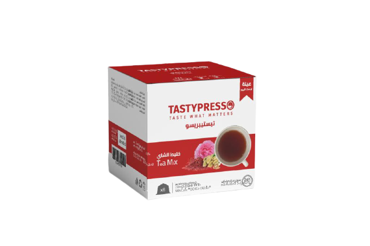

<div class="sc_menuitems_wrap">
    <div class="sc_menuitems sc_menuitems_style_menuitems-2">
        <div class="sc_menuitems_item">
            <div class="sc_menuitem_image">
                

            </div>
            <div class="sc_menuitem_box_title">
                <div class="sc_menuitem_title"><strong>Tea Mix</strong></div>
                <!-- <div class="sc_menuitem_price">$20</div> -->
                <div class="cL"></div>
            </div>
            <div class="sc_menuitem_content">
                <div class="sc_menuitem_content_title">
                    <span class="icon-restaurant3"></span>Description
                </div>
                Karak tea has gained a lot of popularity. The name is derived from the word "kadak" which means "strong"
                in hindi. This drink expresses
                the long-standing commercial relationship between the Kingdom of Bahrain and India

                <a class="prev_menuitem prevnext_menuitem show_popup_menuitem" href="#">
                    <span class="icon-left"></span>
                </a>
                <a class="next_menuitem prevnext_menuitem show_popup_menuitem" href="#">
                    <span class="icon-right"></span>
                </a>
            </div>
            <div class="sc_menuitem_nutritions">
                <div class="sc_menuitem_nutritions_title">
                    <span class="icon-cereal18"></span>Nutrition Facts
                </div>
                <ul class="sc_menuitem_nutritions_list">
                    <li>Calories: <span>54 KCALKcal</span></li>
                    <li>Cholesterol: <span>0 g</span></li>
                    <li>Fiber: <span>9.37 mg</span></li>
                    <li>Sodium: <span>9.1 mg</span></li>
                    <li>Carbohydrates: <span>9 g</span></li>
                    <li>Fat: <span>1.2 g</span></li>
                    <li>Protein: <span>3 g</span></li>
                </ul>
                <div class="cL"></div>
            </div>


            <div class="clearfix"></div>
        </div>
    </div>
    <a class="close_menuitem" href="#">
        <span class="icon-cross92"></span>
    </a>
</div>